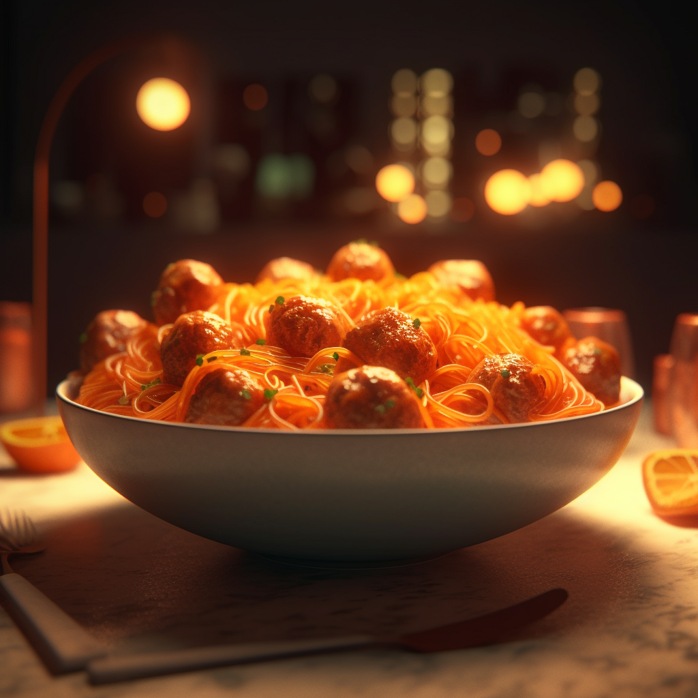

Spaghetti
Description
Spaghetti is a long, thin, solid, cylindrical pasta. It is a staple food of traditional Italian cuisine. Like other pasta, spaghetti is made of milled wheat and water and sometimes enriched with vitamins and minerals. Spaghetti is a staple food of traditional Italian cuisine. Like other pasta, spaghetti is made of milled wheat and water and sometimes enriched with vitamins and minerals. Spaghetti is a staple food of traditional Italian cuisine. Like other pasta, spaghetti is made of milled wheat and water and sometimes enriched with vitamins and minerals.
Ingredients
- Spaghetti noodles.
- Tomato sauce.
- Olive oil.
- Garlic.
- Salt and Pepper.
- Grated parmesan cheese.
- Ground beef and or italian sausage.
- Bell peppers.
- Onions.
- Mushrooms.
- Crushed red pepper flakes (for some heat).
- Anchovies (for a salty, savory flavor).
- White wine or red wine (to deglaze the pan and add richness to the sauce).
- Diced tomatoes(optional).
- Fresh basil(optional).
Steps
- Cook the spaghetti noodles according to package instructions until they are al dente(firm to the bite), then drain and set aside.
- While the noodles are cooking, heat some olive oil in a large skillet over medium heat.
- Add some minced garlic to the skillet and cook for 1-2 minutes, or until fragrant.
- If using ground beef and or italian sausage, add it to the skillet and cook until it's browned and cooked through. If using onions, bell peppers, and or mushrooms, add them to the skillet and cook until they are softened and lightly browned.
- If using anchovies, add them to the skillet and cook for 1-2 minutes until they have dissolved into the oil.
- If using white or red wine, deglaze the skillet with a splash of wine and cook for a minute or two until most of the liquid has evaporated.
- Add the tomato sauce to the skillet and stir to combine. Season with salt, pepper, and crushed red pepper flakes to taste.
- Add any additional ingredients you like, such as capers, olives, or diced tomatoes. Simmer the sauce for 10-15 minutes, stirring occasionally, until the flavors have melded together and the sauce has thickened slightly.
- Add the cooked spaghetti noodles to the skillet and toss with the sauce until the noodles are coated evenly.
- Serve the spaghetti with grated parmesan cheese and fresh basil, if desired.